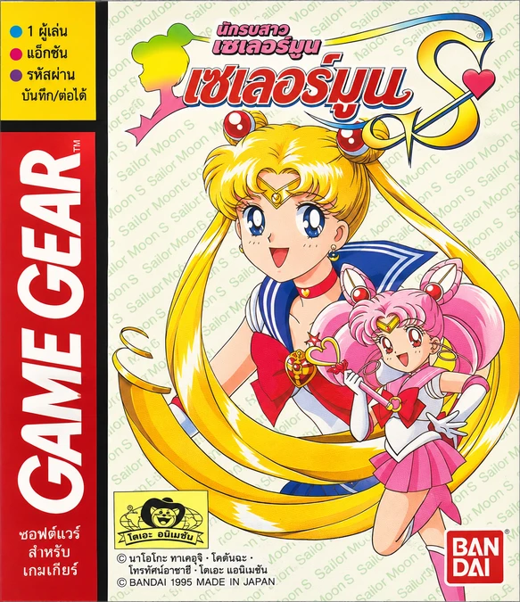

Pretty Soldier Sailor Moon S
เมื่อเดธบัสเตอร์สออกตามล่าหัวใจบริสุทธิ์ อุซางิและจิบิอุสะต้องแปลงร่างเป็นเซเลอร์มูนกับเซเลอร์จิบิมูนเพื่อหยุดแผนร้าย เลือกฮีโร่แล้วฝ่าด่านแอ็กชัน ก่อนพักจากการต่อสู้ไปตามหาหน้ากากทักซิโด้ หมุนรูเล็ต หรือวัดความรู้ในโลกคำถาม
แปลโดยเพจแปลเกมเก่า ·
ชุด 008 เพิ่มเครดิตภาษาไทยบนหน้าไตเติล พร้อมเมนู บทสนทนา มินิเกม และฟอนต์ไทย 8×8 ตรวจไตเติลใน MasterGear 4.8 แล้ว ยังไม่ได้ทดสอบเล่นจนจบทั้งสองโหมด
แปะแพตช์ผ่านเว็บ
ใช้ ROM English v1.1 ไฟล์ .gg ขนาด 1,048,576 ไบต์ เลือก ROM ของคุณแล้วสร้างไฟล์เกมภาษาไทยในเบราว์เซอร์
เลือก ROM English v1.1 เพื่อเริ่ม